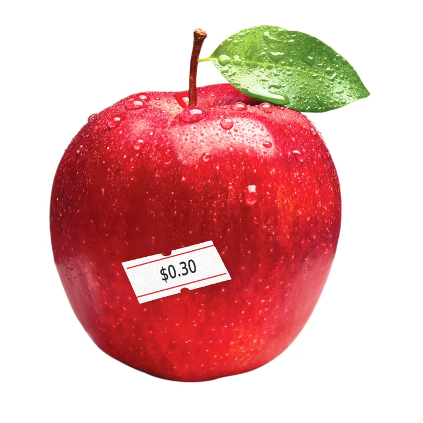

I went looking for the evidence. Here's what I found.
I started Lighten Your Load because I couldn't find any straight answers to my question: 'What's on the food we eat in Australia?' So I went on a deep dive, and this is what I found.
Australia has no consumer-facing produce pesticide program. No equivalent to the US Environmental Working Group's Shopper's Guide. No coordinated annual testing across all states and retail channels. The data exists, but it's fragmented across government bodies, state programs, FOI requests and academic studies. Until the October 2026 Pesticide Action Australia report, this information was sketchy at best.
All the information on lightenyourload.info is sourced, information gaps are named, and the guides are updated as new data comes in. I hope it helps bridge the gaps in awareness, and helps all of us lighten our load towards a healthier future.
Every guide is based on the best available Australian data, supplemented by international research where Australian data doesn't exist. All sources listed. All caveats stated.
The 12 Australian produce items with the highest evidence of pesticide contamination. Ranked by strength of Australian-specific evidence.
Commonly eaten items that don't belong on the Dirty Dozen - but carry specific concerns worth knowing. Citrus, potatoes, ginger, garlic and more.
Produce items with the lowest evidence of pesticide risk in the Australian context. When conventional is generally a reasonable choice.
Grains, bread, oats, nuts, tea, coffee, dried fruit. What the Australian Total Diet Study actually found — and what it didn't look for.
What's in your clothing and textiles — and how to make more informed choices for your family and the environment.
Chemicals are usually tested for safety one at a time, rarely in combination with the many other contaminants we're exposed to every day. Yet studies show most of us carry measurable levels of many synthetic chemicals in our bodies, from our food, our water, our soils and our air.
This is known as our “body burden”. The good news is that some of that load can be reduced by what we choose to take in.
Studies here and in the US have found that switching to a mostly organic diet for about a week can sharply cut the pesticide residues measured in people's urine, by 89% in one Australian study.
My aim with this project is to help Australians be more informed so they can make choices that protect themselves and their families from the unseen risks hiding in plain sight.
With these guides, you can lighten your body's load, and your family's, by choosing spray-free, organic and less-contaminated produce. The hope is that, in time, awareness and demand will drive regulatory change that makes guides like these unnecessary.
When Australia hasn't tested something, I say so - and explain why the gap itself is significant.
The guides are free. No paywall. No email gate. Printable PDFs are pay what you want, including nothing, and contributions fund continued research.
I'm not funded by organic food companies, supermarkets, or any food industry body. My only funding is direct reader support.
Guides are reviewed when new Australian data is published, when major international studies are released, or when regulatory decisions change the picture.
Every ranking is based on the best available evidence, with a clear statement of confidence. I don't pretend the data is better than it is.
FSANZ Total Diet Studies, APVMA MRL register, National Residue Survey, FOI-obtained government data, Friends of the Earth Melbourne, CHOICE, state-based monitoring programs, and Pesticide Action Australia's 2026 residue report.
When Australian data doesn't exist, I use EWG (US), EFSA (EU), Canadian CFIA, and peer-reviewed research — and clearly label every such instance.
Where no residue data exists, I consider skin type, pest pressure, systemic vs. contact pesticide use, and post-harvest treatment practices.
Every item is rated by evidence strength.
Following standard testing practice, produce is washed or peeled before residue testing - so rankings reflect what reaches you when eating normally. Skins and peels may carry higher residues than the flesh.

Because Australia hasn't published comprehensive residue testing of fresh produce since. The last Total Diet Study to test for agricultural chemicals used food sampled in 2013–14, and national monitoring now covers only apples and pears among fresh produce. Where newer independent testing exists, such as Pesticide Action Australia's 2026 report, I use it.
An occasional email when new Australian data changes a guide or a new guide launches. A few times a year, no spam, unsubscribe any time.